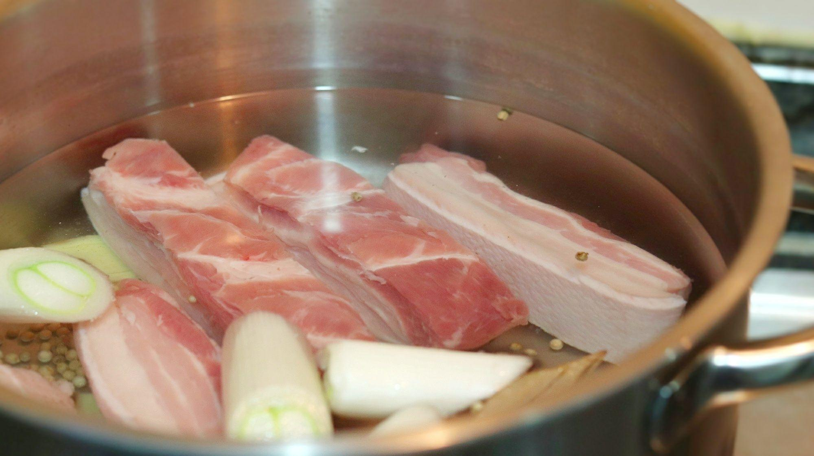

Chinese Cuisine Cooking
Ingredients:
- Pork
- Ginger
- Spring onion
- Cooking wine
- Soy sauce
- Rock sugar
- Bay leaves
- Star anise
- Cinnamon
Instructions:
-  Cut the pork into pieces and blanch in boiling water.
-
 Heat oil in a pan, add ginger and spring onion, then fry the blanched pork until golden brown on both
sides.
Heat oil in a pan, add ginger and spring onion, then fry the blanched pork until golden brown on both
sides.
-
 Add cooking wine, soy sauce, rock sugar, bay leaves, star anise, and cinnamon, stir-fry evenly.
Add cooking wine, soy sauce, rock sugar, bay leaves, star anise, and cinnamon, stir-fry evenly.
-
 Add water, simmer over low heat until the pork is tender and flavorful.
Add water, simmer over low heat until the pork is tender and flavorful.
-
 Sprinkle with chopped spring onion before serving.
Sprinkle with chopped spring onion before serving.
Cooking red-braised pork requires patience and attention to detail. We hope you enjoy this delicious Chinese dish!